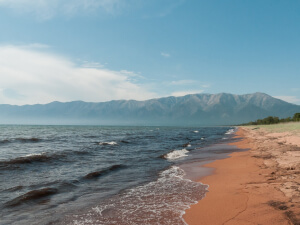
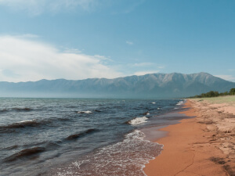
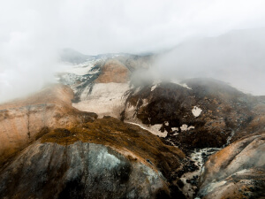
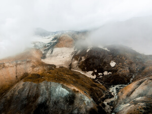
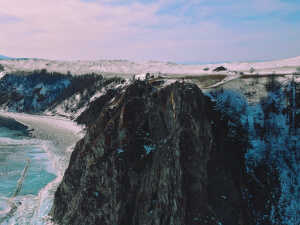
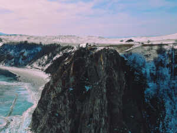

По опросам ВЦИОМ, 95% россиян мечтают куда-нибудь поехать, но только
36% планируют провести отпуск в родной стране. Мол, чего мы тут, дома,
не видели? На самом деле, Россия — это целая вселенная с ласковым
морем юга, густыми лесами Саян и суровыми льдами плато Путорана. А ещё
увидеть все эти красоты можно без миллионов на счету, загранпаспорта и
многочасовых перелетов. Как, например, Вера Башмакова — смелая молодая
мама, которая взяла в охапку троих детей, усадила их в свою «Ладу» и
проехала 20 тысяч километров по родной стране. Мы выбрали и описали
некоторые интересные места, достойные вашего отпуска.
Здесь, посреди лесов и песчаных дюн, вы сможете увидеть два водных
горизонта — спокойного Куршского залива с одной стороны и
подёрнутого рябью волн Балтийского моря с другой. Уникальная
природная зона на краю российского анклава.
На этом Калининградская область не заканчивается. Для
путешественника и исследователя там же по соседству — самая
западная точка России, Балтийская коса, — и немецкое наследие
россыпи небольших приморских городов. Атмосфера здешних мест
исключает суету, окуная в спокойствие природы и запах стального,
прохладного моря.
Почти весь полуостров находится за Полярным кругом. Саамская
тундра, от которой на юг — тайга, а на север — Ледовитый океан,
прикидывающийся Баренцевым морем.
Возможно, вы смотрели Звягинцева и даже слышали историю
арктического фестиваля в Териберке. Возможно, слово «Хибины» не
осталось под снегом школьных воспоминаний об уроках географии.
Возможно, вы не интересовались пронизывающей земную кору
сверхглубокой скважиной, а от апатитов вас давно накрывает апатия.
Но ваша мечта увидеть северное сияние начинает сбываться с билетом
в Мурманск.
Алтай — одно из красивейших мест в России. В первую очередь из-за
гор: если ехать вдоль хребта, вы увидите склоны, усыпанные
соснами, горные реки и озёра. А если вы откроете в автомобиле
окна, сможете познакомиться с невидимым чудом здешних мест —
горным воздухом.
Климат на Алтае умеренный, поэтому ехать сюда лучше всего летом.
Так вы увидите всё разнообразие местной флоры и фауны. По лесам
Алтая бродят лоси, над хребтами летают орлы, а на равнинах пасутся
косули. И знаменитые манулы — тоже обитатели Алтайского края.
Всем известен Байкал как крупнейшее озеро в мире. Многие также
знают, что это самый большой источник пресной воды и одно из
красивейших мест в России.
Конечно, это всё так. Но Байкал ещё идеальное место
для соревнований по скийорингу. Это такой вид спорта, когда лыжник
привязывает себя к мотоциклу, и тандем старается развить как можно
бóльшую скорость на льду. В марте 2019 года на фестивале
«Байкальская миля» был поставлен мировой рекорд — 197.011 км/ч.
Сибирь заканчивается не на Урале, а в Карелии: образующая тайгу
сибирская лиственница не растёт западнее Водлозера. Зато здесь она
вымахивает на 30 метров — леса карельских национальных парков из-за
непроходимых болот никогда не знали топора. Некоторым соснам уже
больше чем полтысячелетия. Прикоснитесь к живому существу, видевшему
солнце раньше, чем увидал его Иван Грозный. В девственном лесу на
сотню километров не встретишь тропы. А на редких тропинках деревья в
паре метров от земли помечены медвежьими когтями. Чтобы все знали,
кто тут хозяин.


 


 

 
